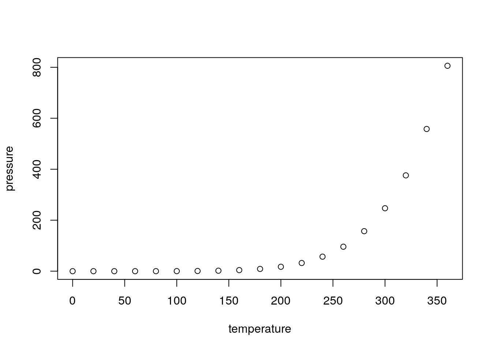

Chapitre 4 Intégrer du code dans les RMD - Les chunks
Les parties de code R sont contenues dans des blocs, appelés chunks.
Ces chunks commencent et finissent par les balises ```.
C’est dans les chunks que vous pouvoir insérer le code R que vous voulez voir exécuter.

On peut créer un nouveau chunk en cliquant sur le bouton
 ou grâce au raccourci clavier
ou grâce au raccourci clavier Ctrl + Alt + I.
Ces chunks peuvent être nommés (avec des caractères alphanumériques
minuscules et majuscules et des tirets -). Dans l’exemple précédent,
le nom du chunk est cars.
4.1 Les options des chunks
Au début de chaque chunk se trouve une accolade contenant la lettre r. C’est dans cette accolade, après la lettre r (qu’il ne faut pas enlever) que les options vont pouvoir être passées. Elles permettent de controller finement ce qui est produit par le chunk, pour choisir de faire apparaître, ou non, le code dans le rapport dynamique, ainsi que les résultats, ou encore pour définir la taille des plots.
Chaque chunk peut recevoir des options. Voici quelques exemples utilisés fréquemment :
eval = TRUE: Le chunk est exécuté.include = FALSE: Le code contenu dans le chunk est éxecuté sans que soient affichés ni le chunk ni son résultat. Ses résultats sont utilisables par d’autres chunks.echo = FALSE: permet de ne pas afficher les codes dans le rendu. Par contre le résultat est affiché.message = FALSE: empêche l’affichage des messages d’information générés par les codes.warning = FALSE: empêche l’affichage des messages d’alerte générés par les codes.error = FALSE: empêche l’affichage des messages d’erreur générés par les codes.fig.cap = "...": ajoute une légende aux graphiques.fig.align = "...": aligne les graphiques (choix :left,rightoucenter).fig.height = 6, fig.width = 8: permet de modifier les dimensions de la figure (en pouces).fig.pos = "...": permet de définir la position des graphiques (choix : ????).
ASK: comment on utilise l’option fig.pos? — CCn
Les chunks sont gérés dans {Rmarkdown} par le package {knitr}.
Il y a plus de 50 options possibles pour un chunk, vous pouvez trouver l’ensemble de la documentation ici.
4.2 Les options globales des chunks
Il est possible de définir des options globales qui seront appliquées à chacun des chunks qui sont contenus dans le fichier, sauf spécifications contraires dans les options d’un chunk.
Ce chunk setup se trouve en dessous de l’en-tête, il permet de
régler les options par défaut de tous les chunks grâce à la fonction
knitr::opts_chunk$set(). Par exemple, on va
pouvoir indiquer que l’on ne veut pas faire apparaitre les messages et
les warnings qui pourraient être générés lors de l’exécution des
chunks. Au lieu de le faire pour tous les chunks, on peut le faire une
seule fois ici.
4.3 Utiliser des outputs
A l’intérieur du chunk, de nombreuses choses peuvent être faites, comme traiter des données, produire une table, des graphiques ou du texte.
Pour cela, on utilise différentes fonctions R comme
plot ou kable dans un chunk.
On peut par exemple inclure un graphique:
ce qui affiche le graphique dans le document, directement après le chunk:

Ou des données non mises en forme
## speed dist
## Min. : 4.0 Min. : 2.00
## 1st Qu.:12.0 1st Qu.: 26.00
## Median :15.0 Median : 36.00
## Mean :15.4 Mean : 42.98
## 3rd Qu.:19.0 3rd Qu.: 56.00
## Max. :25.0 Max. :120.00Ou des tableaux
qui rend
| Sepal.Length | Sepal.Width | Petal.Length | Petal.Width | Species |
|---|---|---|---|---|
| 5.1 | 3.5 | 1.4 | 0.2 | setosa |
| 4.9 | 3.0 | 1.4 | 0.2 | setosa |
| 4.7 | 3.2 | 1.3 | 0.2 | setosa |
| 4.6 | 3.1 | 1.5 | 0.2 | setosa |
| 5.0 | 3.6 | 1.4 | 0.2 | setosa |
4.4 Les insertions de code en ligne
Enfin, il est possible d’insérer la valeur d’objets R (variable,
liste, résultat de calcul simple…) dans du texte. Pour cela il faut
inclure l’objet R entre `r ...code...`.
Par exemple le code suivant:
permet d’afficher dans le document:
Je suis actuellement en train de me former au module 6.
4.5 Exécuter le code des chunks
Les codes contenus dans les chunks d’un document.Rmd peuvent être exécutés comme les codes contenus dans un script R en .R. Vous pouvez exécuter l’ensemble en faisant CTRL + A pour tout sélectionner et CRTL + ENTER pour exécuter. Vous pouvez aussi exécuter le code chunk par chunk en placer votre souris au début d’un chunk puis en utilisant CTRL + ENTER ou en cliquant sur le bouton play vert en haut du chunk. D’autres options sont disponibles dans le menu déroulant du bouton run en haut à droite.
Lorsque le code est excécuté, par défaut les résultats (sorties) et les plots sont affichés dans le document .Rmd. Pour afficher les sorties dans la console et les plots dans la fenêtre graphique, il faut choisir l’option “Chunk Output in Console“.
Exercice 3
ASK: dans ce exercice est ce qu’on doit expliciter les traitements de données et le graphique attendu? oui! il faut prévoir un temps pour expliciter les données utilisées (RPLS) — CCn
- Partir du fichier .Rmd de l’exercice précédent
- Définir des options générales
- Ajouter un chunk créant une table, qui sera traitée mais non affichée dans le document final
- Ajouter un chunk créant un graphique, qui sera traité et affiché dans le document final
- Ajouter une image
- Générer le document